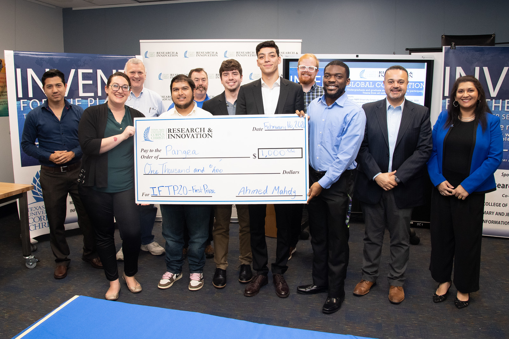
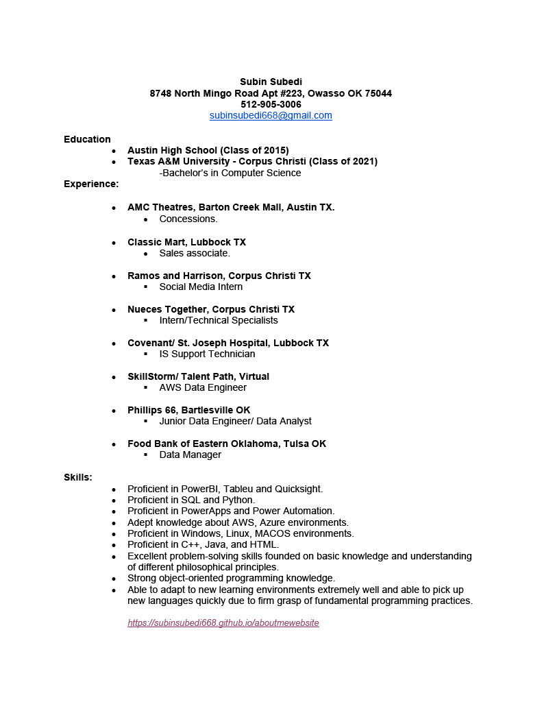

Intro

Hello there! I'm Subin Subedi, currently serving as a Data Manager at the Food Bank of Eastern Oklahoma. My professional journey includes roles at various organizations like Phillips 66 and Providence Hospital, where I've worked as an AWS Data Engineer and Developer. Graduating with a degree in Computer Science from Texas A&M University-Corpus Christi in 2021, I am actively pursuing a position that resonates with my skills and passion, propelling my career to new heights
Since my immigration to the United States in 2010, Texas has been my primary residence. Feel free to explore my portfolio, showcasing projects completed during my academic and professional journey. I am eager to contribute my expertise to a vibrant and innovative work environment.
Projects

- Organizational SharePoint
- Collaborated with diverse departments to establish an organizational SharePoint, providing a centralized platform for easy access to all company resources.
- Power Apps/Automate Processes
- Spearheaded the development of various Power Apps powered by Automate to enhance efficiency and automate historically manual processes. Initiatives included streamlining Credit Card Approval, Product Transfer, and Purchase Approval workflows.
- CEO Activity Dashboard
- Designed and implemented an Executive Dashboard using Power BI and Python, collaborating with every department to ensure comprehensive data representation for the CEO.
- Ethanol Expansion Project
- Utilized PowerBI, SQL, and Python to generate a report illustrating the financial impact of introducing ethanol components since 2020.
- Nightly volume Report
- Leveraged PowerBI, SQL, and Python to craft a comprehensive report detailing tank volumes across various terminals nationwide.
- Alpha Bank
- Developed a local Banking system using JAVA, encompassing fundamental functionalities like account management, funds transactions, and balance transfers.
- Clothing Store
- Engineered a basic JAVA-based online store allowing users to seamlessly browse and purchase items from a curated selection.
- Used University
- Created an Android application via Android Studio facilitating local buying and selling of university-related goods, such as books and robes.
- Bumpinn.net
- Established an online blog platform dedicated to sharing articles on a wide range of music, spanning both new releases and timeless classics.
- JWPerformance
- Developed an online application using REACT JS tailored for personal fitness training. Featured client progress tracking, an interactive forum, and a meal planner.
Resume

Contact